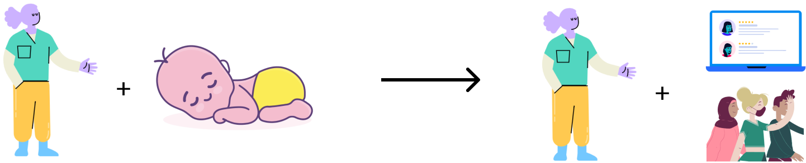
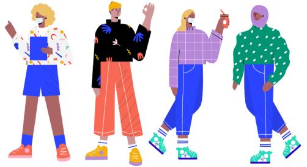
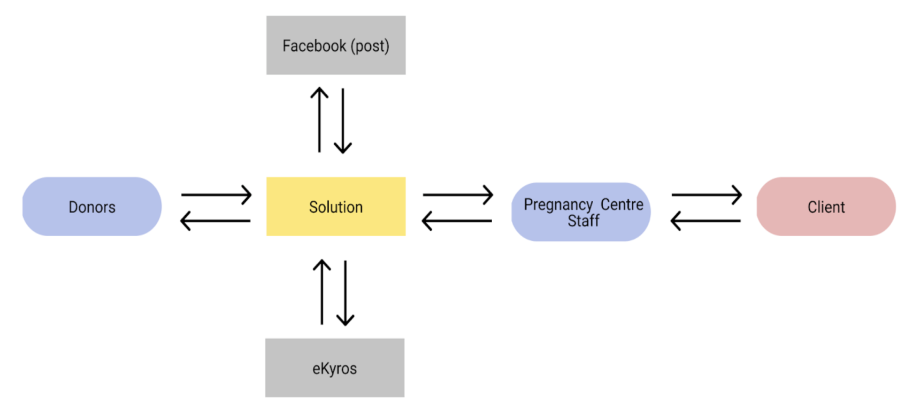
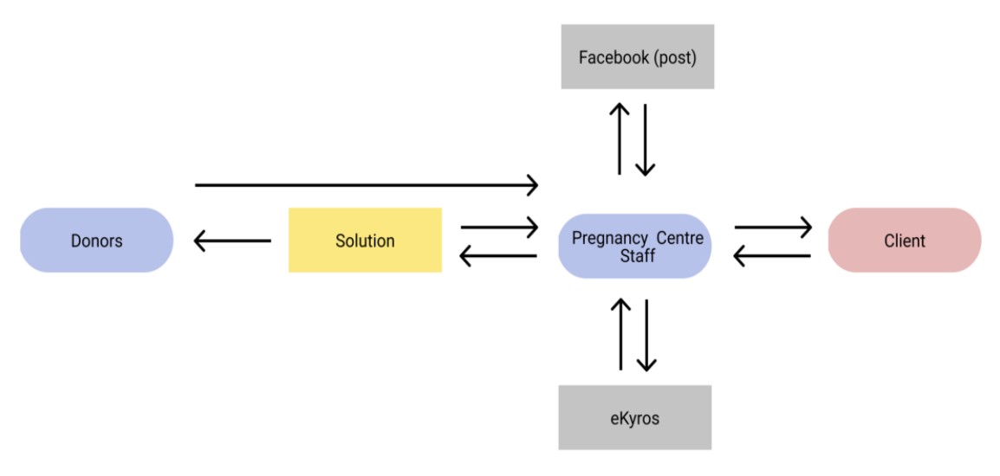

BACKGROUND
One of the services that the Pregnancy Centre provides is arranging donations from community donors to their clients. For instance, if someone brings in a used stroller, the Pregnancy Centre stores the donation until a client (the expecting mother) requests it.
Thus far, this has been an entirely manual process. Donors would show up to the centre, or a church liaison would collect multiple items for early childhood care and drop them off. This could cause inefficiencies if the Pregnancy Centre could not store it and there was no immediate need, or if the item was in poor condition and could not be accepted. Getting the word out about urgent items was also another priority.
SOLUTION
A donation portal with a donor-facing platform to see open requests from clients, and an admin management side for the Pregnancy Centre staff to post the requests as they hear them.
For the Pregnancy Centre staff, they’re able to post about new items requested by clients quickly with the associated information. For donors, they’re able to know before making the trip the open needs for clients to see if they can meet them or not.
Project highlights
01. Working with an all-student team, mentoring designers
02. Contributing to the project scoping, roadmapping and foundational work🏻
03. Getting to see the non-profit using the product for its purpose🏻
Identifying the problem
Identifying the root of the problem and deciding what to solve for is the start of my design process. Time was a big constraint for the team, and there was no shortage of features the Pregnancy Centre wanted or what processes we wanted to solve for them. To begin, we broke down the final product into more realistic stages of implementation and shipping.
Current process
The Pregnancy Centre’s current approach looked something like this:

1. The Pregnancy Centre staff chats directly with their clients: either the expecting mothers or their family members. During those meetings, the client mentions what they need, or the Pregnancy Centre staff recommends items for children.
2. Reach out on their social media to let people know about the need, and to frequent community supporters for those items. Sometimes items are met right away, sometimes clients can be waiting for months.

Oftentimes, there are the one-off individuals who want to donate their own items ad hoc come to the Pregnancy Centre unannounced. There is often no immediate need for them, no room to store them, or they aren't in a good condition to accept which can result in a lost donation and inconvenienced donor.
Our ultimate vision

Solution in phases
To break down the project, we estimated the amount of work for designers and developers to achieve in an MVP. This resulted in a four phase implementation strategy where we prioritized the features The Pregnancy Centre needed to make the product useful and usable.
This case study will cover the first phase of the project with the following features:
